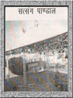

| सत्संग पाण्डाल |
|

श्रीमती विधा जोशी एवं जे.एम. जोशी पूना निवासी द्वारा कराया गया। हजारों की संख्या में भक्तजन इस सत्संग स्थल पर सत्संग , कथा एवं प्रवचन का लाभ समय पर लेते रहते हैं। गुफा दर्शन - सन्तों के भजन साधन हेतु रामद्वारा में छतरी के पास एवं रामसभा में छोटी गुफाएं बनी हैं जिसमें सन्तजन एकान्तवास करते हुए भगवदभजन में तल्लीन रहते थे। तृषा तृप्ति केंद्र- सन्तों के पावन धाम श्रीबड़ारामद्वारा में पीने के जल की व्यवस्था हेतु भक्तजनों की सुविधार्थ रामद्वारा के पश्चिम द्वारा पर सन्त श्री रामप्रसादी महाराज की सत्प्रेरणा से बड़रामद्वारा के द्विशताब्दी समारोह के उपलक्ष्य में स्व. श्री बींजराजजी मानधना की पावन स्मृति में तृषा तृप्ति केन्द्र का निर्माण सं. 2059 में कराया गया। जहां ठंडे जल की मशीन भी लगी हुर्इ है। श्री सेवगरामजी महाराज की तपोस्थली- प्राचीन श्री परसरामजी महाराज की तप: स्थली अष्टखंभीय छतरी के नीचे विशाल चटटान के नीचे श्री सेवगरामजी महाराज की तपोभूमि है। एक बार श्री सेवगरामजी महाराज इसी पावन स्थान पर भजन में तुर्यगावस्था में थे। एक नेवले ने पैर में घाव कर दिया, खून बहने लगा उसी समय राजघराने से तत्कालीन महाराज साहब दर्शन के लिए पधारे। साथ में अंग्रेज लोक भी थे। क्योंकि उस समय अंग्रेजो का शासन था। रामद्वारा के पास में ही अंग्रेजों के रहने के स्थान बने हुए थे। यहां पर बेरी का जल बहुत ही अच्छा था। उस बेरी के जल को अंग्रेजों ने स्वास्थ्य के अनुकूल समझ कर अपने रहने के लिए यही स्थान बना दिया था। जब महाराजा साहब दर्शन के लिए आए और महाराज के पैर में से खून बहते हुए देखा तो उन्होंने उपचार करवाया। कहते हैं कि जहां नेवले ने काटा वहां घाव में पाव मोम भरकर उनका इलाज किया गया। इतना बड़ा घाव होने पर भी श्री सेवगरामजी महाराज कुछ नहीं बोले। ऐसी उनकी भजन की ऊँची स्थिति थी कि उन्हे शरीर का भी भान नहीं रहता था। एक बार श्री सेवगरामजी महाराज घूमते हुए उदयपुर पहुँच गए। वहां वे पिछोला झील के किनारे बैठे हुए थे। महाराजश्री की भजन भावना से वहां की जनता का महाराजश्री के प्रति बड़ा अनुराग हुआ। बड़ी संख्या में लोग वहां महाराजश्री के दर्शन करने के लिए पहुंचने लगे।वहां के राजा, ठाकर लोग भी उनके दर्शन के लिए पहुंचने लगे तो उस समय वहां के जो दूसरे साधु सन्त थे उन लोगों ने सोचा कि ये दूसरा साधु यहां आ गया ये हमारी महिमा कम कर देगा। |